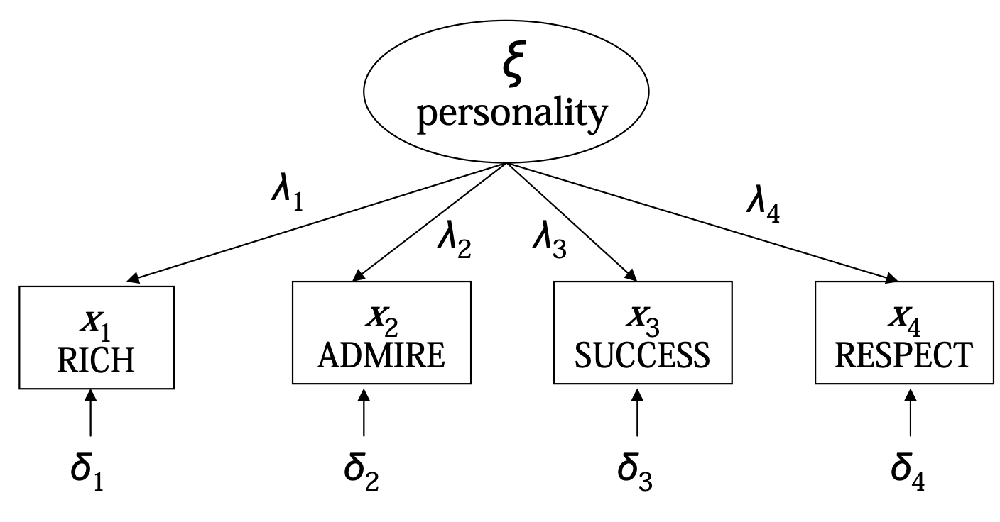
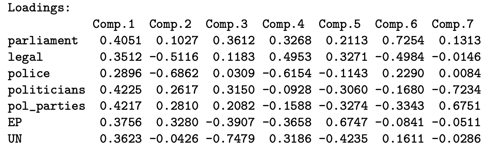
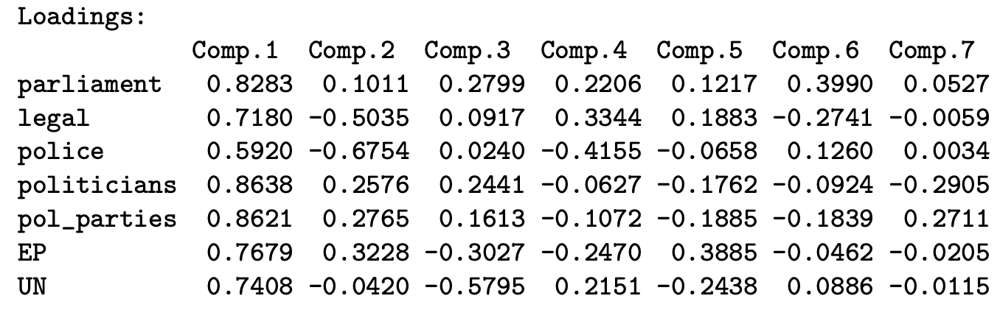
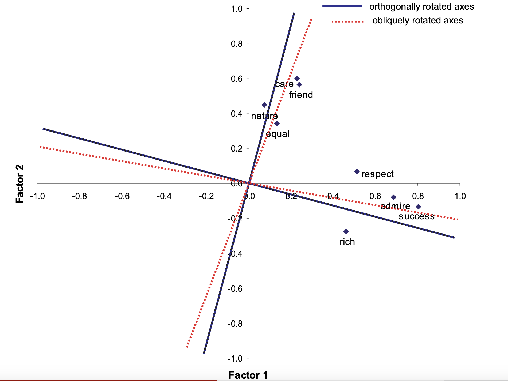

pca <- princomp(~ x1 + x2 + x3, data = mydata,
cor = TRUE, scores = TRUE, na.action = na.exclude)
summary(pca)10 Multivariate Methods
So far, we have focused on models with one outcome variable \(Y\). However, in many statistical situations, we have multiple outcome variables.
In this chapter, we start by discussing unsupservised learning methods including principle components analysis and cluster analysis. Then, we discuss a series of latent variable models, including factor anlaysis, item response theory, and latent class models.
10.1 Overview
In statistics, we often want to measure concepts. However, some concepts are not directly observable. For example, we cannot measure how happy someone is, or the quality of life in a country. However, these concepts cause certain indicator variables to change. For example, if quality of life in a country is higher, you might expect that country to exhibit higher salaries, better work-life balance, good health care and education, and so on.

These multiple observed indicator variables \(x_1, \dots, x_p\) themselves are not that interesting for us - however, when combined together, they can be used to create interesting results, or as measures of some concept of interest to us. The main multivariate approaches include:
| Method | Uses |
|---|---|
| Principle Components Analysis | For dimensional reduction and interpreting the main drivers of variation in observed variables. |
| Cluster Anlaysis | For understanding hidden patterns and structures within our observed variables. |
| Factor Analysis | For measuring continuous latent variables with continuous observed variables. |
| Item Response Theory | For measuring continuous latent variables with binary/categorical observed variables. |
| Latent Class Models | For measuring categorical latent variables with categorical observed variables. |
| Structural Equation Models | To link latent variable models together through larger models of relationships. |
10.2 Principle Components Analysis
Principle components analysis (PCA) is a way to combine multiple observed variables into fewer variables, which is a process called dimensional reduction. We start off with a set of observed variables \(\b x_t = (x_1, x_2, \dots, x_p)_t\) for each observation \(t\). Each observed variable \(x_i\) has a variance \(\V x_i\), and their total variance is \(\V x_1 + \dots + \V x_p\).
PCA takes these \(p\) number of original variables \(x_1, \dots, x_p\), and calculates a set of \(p\) new variables called principle components \(y_1, \dots, y_p\). Each principle component \(y_j\) is made up a linear combination of the original variables:
\[ y_j = \ a_{1j}x_1 + a_{2j}x_2 + \dots + a_{pj}x_p \]
All of the principle components together have the same variance as the original variables: \(\sum \V y_j = \sum \V x_i\). Thus, the new principle components carry the same information/variation as the original variables, just with a different distribution between each variable. Each principle component is uncorrelated with the next principle component - thus each PC conveys distinct aspects of the data.
To estimate principle components, we use the princomp() function:
This will generate all the principle components (\(p\) number of them). Principle components are labelled in order of the variance they contain. So, principle component \(y_1\) will have more variance than principle component \(y_2\), and so on. The proportion of total variance in all of the \(x_1, \dots, x_p\) the first \(q\) principle components will explain is
\[ \frac{\sum_{j=1}^q \V y_j}{\sum_{i=1}^p \V x_i} = \frac{\lambda_1 + \lambda_2 + \dots + \lambda_q}{\lambda_1 + \lambda_2 + \dots + \lambda_1 + \dots + \lambda_p} \]
Frequently, the first few principle components will explain around 70-80% of the total variation in all of \(x_1, \dots, x_p\). Thus, we can reduce the number of variables from \(p\) to just 2-3 principle components. A screeplot can visualise this:
screeplot(pca, type = "l", main = "")We can rewrite each principle component \(y_j\) in terms of linear algebra:
\[ y_j = \b a^\top_j \b x \quad \iff \quad y_j = \begin{pmatrix} a_{ij} & a_{2j} & \dots & a_{pj} \end{pmatrix} \begin{pmatrix} x_1 \\ x_2 \\ \vdots \\ x_p \end{pmatrix} \]
And all the principle components \(\b y = (y_1, \dots, y_p)\) can be expressed as
\[ \b y = \b A^\top \b x , \quad \b A = \begin{pmatrix} \b a_1 & \b a_2 & \dots & \b a_p \end{pmatrix} \]
The weights \(a_{ij}\) of the PCs are calculated from eigenvalue decomposition of the covariance matrix \(\b\Sigma\) of observed variables \(x_1, \dots, x_p\). We assume that \(\b\Sigma\) has \(p\) distinct positive eigenvalues, denoted \(\lambda_1 > \lambda_2 > \dots > \lambda_p > 0\). By applying eigenvalue decomposition to matrix \(\b\Sigma\), we get a matrix \(\b A\) made up of eigenvectors of \(\b\Sigma\), and a diagonal matrix \(\b D\) with eigenvalues \(\lambda\) on its diagonal:
\[ \b\Sigma = \b{ADA}^{-1}, \quad \b D = \begin{pmatrix} \lambda_1 & & \\ & \lambda_2 & \\ & & \ddots \end{pmatrix}, \quad \b A = \begin{pmatrix} \b a_1 & \b a_2 & \dots & \b a_p \end{pmatrix} \]
Each eigenvalue \(\lambda_j\) corresponds to an eigenvector \(\b a_j\), which is the weights vector of the \(j\)th principle component. The variance of each PC \(y_j\) is equivalent to \(\lambda_j\), the \(j\)th eigenvalue.
We can interpret our PCA in 3 ways:
Remember the form of each principle component \(y_j\) is:
\[ y_j = \ a_{1j}x_1 + a_{2j}x_2 + \dots + a_{pj}x_p \]
\(a_{ij}\) are the weights of each observed variable \(x_1, \dots, x_p\) in a principle component \(y_j\). We can calculate weights in R as follows:
pca_weights <- loadings(pca)
print(pca_weights, cutoff = 0, digits = 4)The larger (both negative or positive) a weight for a variable means that variable contributes more to the specific principle component \(y_j\). For example, take this table:

We can see for component \(y_2\), the observed variable UN has a close to 0 weight. That implies component \(y_2\) is not really measuring UN. We can also see the \(y_2\) has high negative weight for police, which indicates as police increases, \(y_2\) decreases. Using these weights, we can create an interpretation for each principle component.
The component loadings \(a_{ij}^*\) are a standardised/normalised form of weights:
\[ a_{ij}^* = \sqrt{\lambda_j} \cdot a_{ij} \ = \ sd(y_j) \cdot a_{ij} \]
When PCA is done on the correlation matrix (which the code implementation for R does), the component loadings \(a_{ij}^*\) also eqwual the correlation between a given observed variable \(x_i\) and the principle component \(y_j\).
\[ a_{ij}^* = Corr(x_i, y_j) \]
We can calculate component loadings in R by:
pca_weights <- loadings(pca)
sqrt_lambda <- pca$sdev
print(t(t(pca_weights)*sqrt_lambda), cutoff = 0, digits = 4)
The interpretation of this table is almost identical to the interpretation of weights.
For each unit \(t\) in our data, we can calculate a component score for each principle component \(y_j\). This is basically the \(y_j\) value for unit \(t\):
\[ y_j = a_{1j}z_1 + a_{2j}z_2 + \dots + a_{pj}z_p \]
Component scores are already calculated in the PCA estimation. We can access them:
pca$scoreBy doing this for each unit \(t\) in our data, we now have a new variable \(y_j\) that we can use for further analysis. This essentially allows us to condense our \(p\) number of observed variables \(x_1, \dots, x_p\) to a few (1-3) principle components \(y_j\) which contain 70-80% of the variation in our original \(x_1, \dots, x_p\). This is extremely useful for two reasons:
- Reducing computational power. If we have a lot of observed variables (let us say 50-100 of them), many models without analytical solutions (so everything except OLS) will require a lot of computer power and resources to estimate. By reducing the number of variables and only using a few principle components, we get similar results with far less computing power.
- Multicollinearity issues: closely correlated explanatory variables in regression models often reduces precision of our coefficient estimates. We can combine correlated variables into one or two principle components, which carry most of the same meaning, and since principle components are by design orthogonal (uncorrelated with each other), we completely solve the issue of multicollinearity.
10.3 Cluster Analysis
10.4 Factor Analysis
Latent variables \(\xi\) (also called factors) are variables that we cannot directly measure. However, these latent variables \(\xi\) can be measured through observed outcome variables \(Y_1, \dots, Y_p\), called items. Factor analysis assume that we have a set of continuous observed items \(Y_1, Y_2, \dots, Y_p\), that are all the result of some continuous latent factor variable \(\xi\).
The latent factor \(\xi\) is assumed to be distributed \(\xi \sim \mathcal N(\kappa = 0, \ \phi = 1)\). We assume that each item \(X_i\) is normally distributed, and is related to the latent factor \(\xi\) by a linear model:
\[ Y_i = \tau_i + \lambda_i\xi + \delta_i, \quad \delta_i \sim \mathcal N(0, \theta_{ii}) \]
\(\lambda_i\) is the slope (called the factor loadings), which determines the relationship/covariance between factor \(\xi\) and a specific item \(Y_i\). \(\delta_i\) is the error term, and is called the unique factor - the part of the item not explained by the factor.
More Details on Assumptions
We make a few assumptions on this linear model above.
- Error terms \(\delta_i\) for each regression model between \(\xi\) and \(Y_1, \dots, Y_p\) is normally distributed with a mean of 0. \(\delta_i \sim \mathcal N(0, \theta_{ii})\).
- Error terms \(\delta_1, \dots, \delta_p\) of each model \(i\) are uncorrelated with each other. This implies that correlations between \(Y_1, \dots, Y_p\) are entirely explained by the latent factor \(\xi\).
- Factor \(\xi\) is uncorrelated with the error term \(\delta_i\) (exogeneity).
The estimation of this model involves maximum likelihood estimation:
Before we start, we must ensure our data has no missing values:
no_na <- apply(my_data, 1, FUN=function(x){all(!is.na(x))})
my_data <- my_data[no_na,]We can estimate a factor analysis model with maximum likelihood estimation with the psych package and GPA rotation:
fa <- psych::fa(my_data, nfactros = 1, fm = "ml")
print(fa)We can also do factor anlaysis with multiple factors (see the third tab for more details):
# for orthogonal rotation (for data reduction)
fa <- psych::fa(my_data, nfactros = 2, fm = "ml", rotate = "none")
print(fa)
# for oblique rotation (for interpretation)
fa <- psych::fa(my_data, nfactros = 2, fm = "ml", rotate = "oblimin")
print(fa)The output will provide a table of the loadings \(\lambda_i\) for each item \(Y_i\). If you have multiple factors, ML1 represents \(\xi_1\), and ML2 represents \(\xi_2\), and so on. For oblique rotations, there is also a table of correlations between all the factors \(\xi_j\).
Given the linear models between \(Y_i\) and \(\xi\), we know \(\E(Y_i | \xi) = \tau_i + \lambda_i \xi\). Since \(Y_i\) is assumed to be normally distributed, we can determine the distribution of \(Y_i\) as
\[ Y_i \sim \mathcal N(\tau_i + \lambda_i \xi, \ \ \lambda_i^2 \phi + \theta_{ii}) \]
Our theoretical variance-covariance matrix \(\b\Sigma\) between \(X_1, \dots, X_p\), where the diagonals are the variances of \(X_1, \dots, X_p\), and the non-diagonals are \(Cov(X_n, X_m)\) will be
\[ \b\Sigma =\begin{pmatrix} \lambda_1^2 \phi + \theta_{11} & \lambda_1\phi\lambda_2 & \dots & \lambda_1 \phi \lambda_p \\ \lambda_2 \phi \lambda_1 & \lambda_2^2 \phi + \theta_{22} & \dots & \lambda_1 \phi \lambda_p \\ \vdots & \dots & \ddots & \vdots \\ \lambda_p\phi\lambda_1 & \lambda_p \phi \lambda_2 & \dots & \lambda_p^2 \phi + \theta_{pp} \end{pmatrix} \]
Since \(\phi = 1\) by assumption, we can rewrite \(\b\Sigma\) as:
\[ \b\Sigma = \b{\Lambda\Lambda^\top} + \b\Theta, \quad \b\Lambda = (\lambda_1, \dots, \lambda_p)^\top, \ \b\Theta = \theta_{ii} \b I \]
Where \(\b\Lambda\) is a vector of factor loadings \(\lambda_i\), and \(\b\Theta\) is a diagonal matrix with diagonals being \(\theta_{ii}\). Our goal is to find the values of \(\b\Lambda\) and \(\b\Theta\) that maximise the likelihood of observing the data given the model. Thus, we can use maximum likelihood estimation. Based on the multivariate normal distribution, we can establish that the log-likelihood function is:
\[ \begin{align} \ell(\b\Lambda, \b\Theta; \b S) & = -\frac{n}{2}(\log |\b\Sigma| + \mathrm{Tr}(\b{S \Sigma}^{-1}) \\ & = -\frac{n}{2}(\log |\b{\Lambda\Lambda^\top} + \b\Theta | + \mathrm{Tr}(\b{S}(\b{\Lambda\Lambda^\top} + \b\Theta )^{-1}) \end{align} \]
Where \(\b S\) is the sample covariance matrix, \(\b\Sigma\) is still our theoretical-implied covariance matrix from above, and \(\mathrm{Tr}(\cdot)\) is the trace of a matrix. We can use an iterative algorithm such as Newton-Raphson to estimate \(\b\Lambda\) and \(\b\Theta\).
We can have more than one latent factor \(\b\xi = (\xi_1, \dots, \xi_q)\). We assume all are standardly normally distributed as before. Each item \(X_1, \dots, X_p\) is now related to each factor \(\xi_1, \dots, \xi_q\) with a regression:
\[ X_i = \tau_i + \lambda_{i1}\xi_1 + \lambda_{i2}\xi_2 + \dots + \lambda_{i1} \xi_q + \delta_i, \quad \delta_i\sim\mathcal N(0, \theta_{ii}) \]
Each factor can be correlated with each other - which means \(Cov(\xi_j, \xi_k) = \phi_{jk}\) must be estimated as well. The number of factors \(q\) must be small enough given the number of items \(p\) in order for our model to be identified:
\[ df = \frac{(p-q)^2-(p+1)}{2}≥ 0 \]
Finally, we have an issue of factor rotation - this is because our different factors can be rotated in infinitely many ways, and still produce the same model fit. The default rotation in many calculations orthogonal (perpendicular), which means factors are uncorrelated. The result from this estimation is very similar to PCA, and is good for dimensional reduction.

However, for interpretation ease, it is often useful to use oblique rotations, where factors can be correlated. This is because oblique rotations will have more factor loadings of 0, which will allow us to be more clear with what a factor is measuring.
We can interpret our factor analysis models in a few ways:
Our \(\hat\lambda_i\) will be the estimated covariances/relationships between any item \(X_i\) and the latent factor \(\xi\). If item \(x_i\) has been standardised to a standard normal distribution, \(\hat\lambda_i\) will also be the correlation between \(x_i\) and \(\xi\).
- Also note that in terms of interpretation for multiple factors, \(\hat\lambda_{ij}\) is only the covariance between \(X_i\) and \(\xi_j\) if all factors are uncorrelated. If factors are correlated, we lose this nice interpretation.
We can interpret \(\xi\) based on the items \(X_i\) that have the largest factor loadings \(\hat\lambda_i\). Generally, if the factor \(\xi\) has very close to 0 loadings for a certain item \(Y_i\), that factor is not measuring that item.
Recall that when we assumed \(\xi\) is standardly normally distributed, the variances of \(X_i\) (from the matrix above) become:
\[ \V X_i = \lambda_i^2 + \theta_{ii} \]
- \(\lambda_i^2\) is the part of the variance in \(X_i\) explained by the factor \(\xi\). This is known as the communality of \(X_i\).
- \(\theta_{ii}\) is the part of \(X_i\) not explained by the factor \(\xi\), and is called the unique variance.
- The proportion \(\rho_i =\lambda_i^2 / (\lambda_i^2 + \theta_{ii})\) is the proportion of variance in \(X_i\) explained by our factor \(\xi\), called the reliability. This is the \(R^2\) of factor analysis. If our items \(Y_i\) are standardised, then \(\V Y_i = 1\), and the reliability can simply be calculated as \(1-\theta_{ii}\).
Once we have estimated our model, we can predict the latent factor \(\xi\) value for any individual \(t\) in our data. The factor scores in factor analysis are given by:
\[ \tilde\xi_t = w_0 + w_1 X_{t1} + w_2 X_{t2} + \dots + w_p X_{tp} \]
Factor scores are estimated with the model, and can be accessed with
fa$scoresThese are linear combinations of \(X_1, \dots, X_p\), with weights \(w_i\) determined by the strength of the relationship between \(X_i\) and \(\xi\) as estimated by \(\hat\lambda_i\) and the unique variance \(\theta_{ii}\).
- If two items have the same communality \(\lambda_i^2\), the two items are measuring the same factor on same scales. If they are different, then different scales.
- If two items have the same unique variance \(\theta_{ii}\), the two items are measuring the same factor with the same amount of error. If they are different, then different amount of error.
Congeneric Measures are when \(\lambda_i^2\) and \(\theta_{ii}\) are different for two items. Tau-Equivalent measures are when \(\lambda_i^2\) is equivalent between two items, but \(\theta_{ii}\) is different. Parallel measures are when \(\lambda_i^2\) and \(\theta_{ii}\) are equivalent between two items. If two items are parallel measures, they will get equal weights \(w\) in the calculation of factor scores.
We can compare the fit between models in a few ways. First, for selecting whether or not to include items, we should look at the reliability of each item. If the reliability is very low, we may not want to include this item.
For nested models, since factor analysis is estimated with MLE, we can also do likelihood ratio tests, with the null hypothesis \(M_0\) having less parameters, and alternative model \(M_1\) having more parameters. If \(M_1\) is statistically significant, it is the better model.
For non-nested models, we have a few options:
- Information Criterion Statistics that come with MLE, such as AIC or BIC. Lower values indicate better model fit.
- Global goodness of fit test - a likelihood ratio test, but our null model is our fitted model, and the alternate model is a hypothetically perfect model that estimates the sample covariance matrix perfectly. We do not want to reject the null (and want a higher p-value when comparing models), since we want our fitted model to be good. The downside of this is that these tests are sensitive to sample size - larger sample size means more likely to reject our fitted model.
- Global fit indicies address the sample-size concern in global goodness of fit tests. These include root mean square error of approximation (RMSEA), standard root mean squared residual (SRMR), tucker and lewis index (TLI), and comparative fit index (CFI). These are not too important to understand, but are frequently reported alongside factor analysis models.
We can also conduct statistical significance tests of individual \(\lambda_i\) with a wald-test. Generally, our null is \(\lambda_i = 0\), so if this turns out to be insignificant, we can set \(\lambda_i=0\) (for a confirmatory model with multiple factors for better interpretation), or eliminiate that item as it is not explaining a factor.
10.5 Item Response Theory
Latent variables \(\xi\) (also called factors) are variables that we cannot directly measure. However, these latent variables \(\xi\) can be measured through observed outcome variables \(Y_1, \dots, Y_p\), called items. Item Response Theory (IRT), also called Latent Trait Models, assume that we have at least 3 binary observed items \(Y_1, \dots, Y_p\). We have one continuous latent factor \(\xi\).
We assume the factor \(\xi\) be normally distributed \(\xi \sim \mathcal N(\kappa = 0, \phi = 1)\).We assume that the relationship between an observed item \(Y_i\) and the latent factor \(\xi\) to be of the form of a binary logistic regression:
\[ \log\left(\frac{\pr_i(\xi)}{1 - \pr_i(\xi)}\right) = \tau_j + \lambda_j \xi,\quad \pr_i(\xi) = \P(Y_i = 1|\xi) \]
The intercept parameter \(\tau_j\) is known as the difficult parameter. It is the probability of a item \(Y_i\) equalling 1, when the factor \(\xi = 0\). The coefficient \(\lambda_i\) is the factor loading, which is also known as the discrimination parameter. This explains the relationship between the item \(Y_i\) and \(\xi\).
More Details
We can take the above equation, exponenting both sides and solving for \(\pr_i(\xi)\), getting:
\[ P(Y_i = 1|\xi) = \pr_i(\xi) = \frac{e^{\tau_i + \lambda_i\xi}}{1+e^{\tau_i + \lambda_i\xi}} \]
This allows us to get fitted probabilities of how \(\xi\) affects the probability of an item being \(Y_i = 1\). These fitted probabilities are called item response curves.
IRT can also be applied to items with three or more categories, although this is quite rare. We will use an ordinal logistic regression model (with cumulative probabilities), or a multinomial logistic regression model instead.
The estimation of this model involves maximum likelihood estimation:
We can interpret our item response theory model in a few ways:
The discrimination parameter \(\lambda_i\) can be thought of the part of \(Y_i\) that is explained by \(\xi\), and the difficulty parameter \(\tau_i\) can be thought of the unique part of the item. However, neither are directly interpretable as variances unlike factor anlaysis.
Once we have estimated our model, we can predict the latent factor \(\xi\) value for any individual \(t\) in our data. The factor scores in IRT are caculated as the estimated mean of the factor \(\xi\), given the values of items \(Y_1, \dots, Y_p\) for observation \(t\):
\[ \tilde\xi = \E(\xi | Y_1, \dots, Y_p) \]
The scores will be a linear combination of items \(Y_1, \dots, Y_p\):
\[ \tilde\xi_t = \hat\lambda_1 Y_{t1} + \hat\lambda_2Y_{t2} + \dots + \hat\lambda_p Y_{tp} \]
Factor scores are estimated with the model, and can be accessed with
10.6 Latent Class Models
Latent variables \(\xi\) (also called factors) are variables that we cannot directly measure. However, these latent variables \(\xi\) can be measured through observed outcome variables \(Y_1, \dots, Y_p\), called items. Latent Class Models assume that we have at least 3 categorical observed items \(Y_1, \dots, Y_p\). We have one categorical latent factor \(\xi\).
We assume the items \(Y_1, \dots, Y_p\) are observed categorical items, with each item \(Y_j\) having \(K_j\) number of categories. Let factor \(\xi\) be categorical with \(C\) categories/classes, where \(C\) is chosen by the user.
Our parameter of interest is the item response probability, which is the probability of an item \(Y_i\) equals category \(k\), given \(\xi\) equals category \(c\):
\[ \pr_{ikc} = \P(Y_i = k|\xi = c) \]
The model that describes the relationship between item \(Y_i\) and factor \(\xi\) is given by:
\[ \log\left(\frac{\pr_{ikc}}{\pr_{i1c}}\right) = \tau_{ik} + \sum\limits_{d=2}^C \lambda_{ikd}D_d \]
Where \(\lambda_{ik1} = 0\), and \(D_d\) are dummy variables for latent classes/categories \(d = 2, \dots, C\) of \(\xi\). Unlike the other two models, we cannot assume \(\xi\) is normally distributed, since it is categorical. Instead, we assume \(\xi\) is categorical with probabilities \(\alpha_c = \P(\xi = c)\).
We can interpret our latent class models in a few ways:
Once we have estimated our model, we can predict the latent factor \(\xi\) value for any individual \(t\) in our data. Instead of predicting a value of \(\xi\) (since it is categorical in latent class models), we will classify observations \(t\) into one of the categories/classes of \(\xi\). We estimate the probability of an observation being in every class \(c\), given their values of \(Y_1, \dots, Y_p\):
\[ \hat\P(\xi = c|Y_1 = k_1, Y_2 = k_2, \dots, Y_p = k_p), \quad \forall \ c \]
And whichever category \(c\) for which the calculated probability is the highest is the category we assign unit \(t\) to in \(\tilde\xi\).
Factor scores are estimated with the model, and can be accessed with